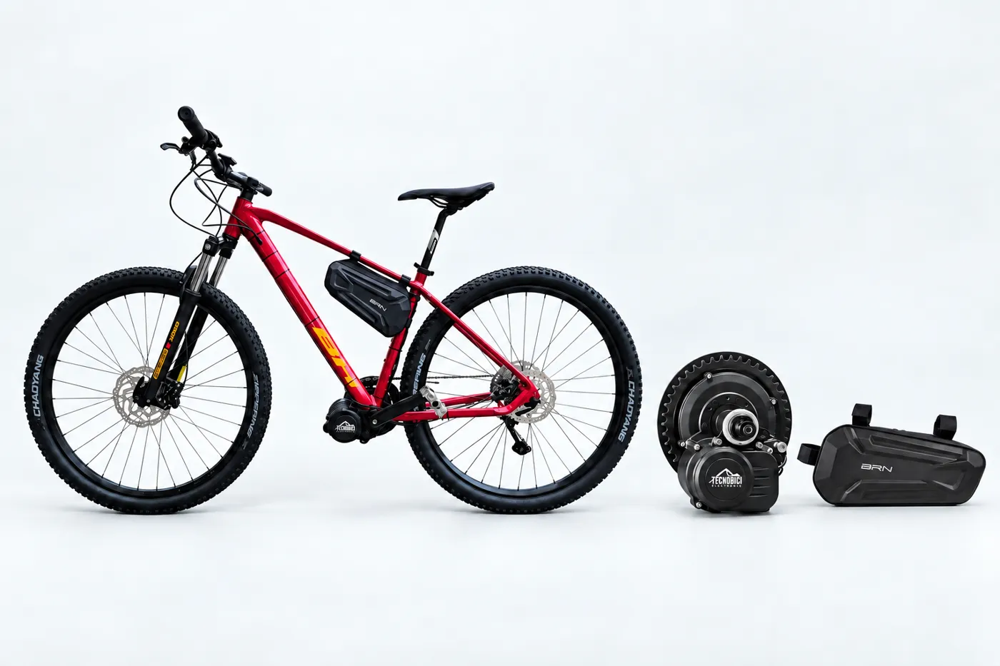
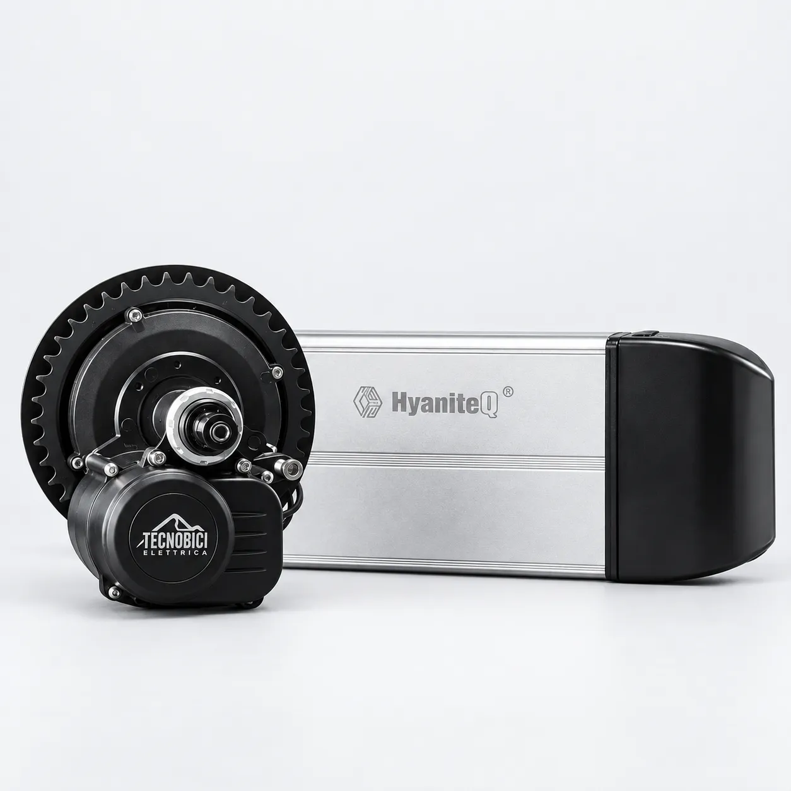
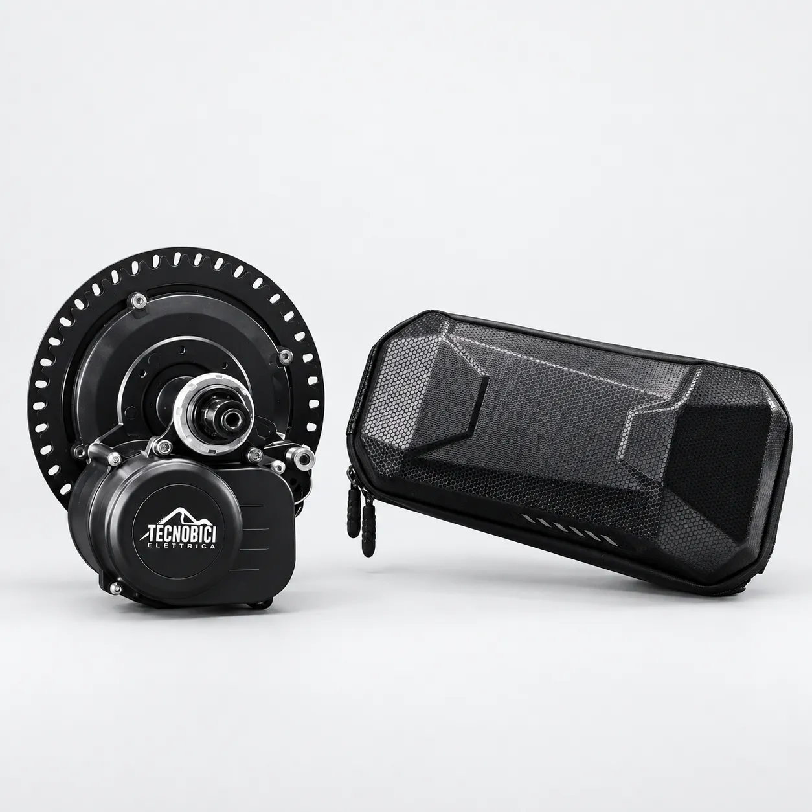
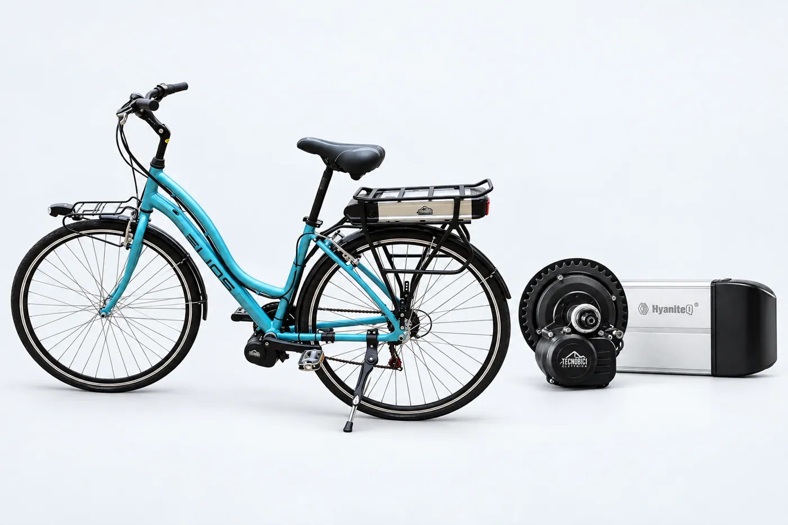

Kit Bafang 250W
€ 799 € 645
Tecnobicielettrica · Este (PD)
Kit di conversione Bafang e Tongsheng e bici elettriche complete, montati a Este.

Puoi trasformare la bici che hai già, oppure scegliere una e-bike completa pronta da usare.
Tre passaggi, senza sorprese. Il lavoro lo facciamo noi, in officina.
Ti aiutiamo a trovare potenza e batteria giuste per la tua bici e per le strade che fai.
Porti la bici in Via Tito Livio. La convertiamo, la proviamo e ti spieghiamo come usarla.
Esci dall’officina con la bici elettrica. Se serve un controllo, siamo qui.
Dal 250 al 1000 watt. Il prezzo è quello del kit, montaggio in officina.
€ 799 € 645

€ 675

€ 745
€ 895
€ 1.095
I kit Tongsheng (Pianura, Collina, Passo, Cima e TSDZ8) e le batterie si scelgono insieme al kit. Il prezzo te lo diciamo in officina, su richiesta.

Este (PD)
Montiamo i kit sulla tua bici, li registriamo e restiamo il riferimento quando serve un controllo o un ricambio. Ci trovi in centro a Este.
Tecnobicielettrica è l’officina di Este che converte le bici e vende e-bike complete. Il lavoro lo vedi prima di pagare: la bici esce provata.
Foto officina da inserire
Qui andrà una foto vera del banco di lavoro e di chi monta i kit, a Este.
Montaggio in sedeIl kit lo installiamo noi, sulla tua bici.
AssistenzaControlli e ricambi, dopo la consegna.
Este (PD)Un indirizzo vero, non solo un sito.